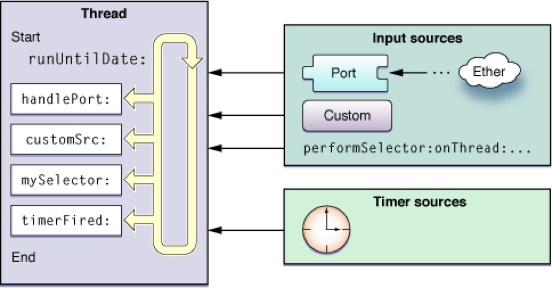

RunLoop
1. 什么是runloop
Run loops 是线程相关的的基础框架的一部分。一个 run loop 就是一个事件处理 的循环,用来不停的调度工作以及处理输入事件。使用 run loop 的目的是让你的线程在有工作的时候忙于工作,而没工作的时候处于休眠状态。
runloop就是运行循环,它的基本作用就是让程序持续运行,处理App中的各种事件(触摸,定时器,Selector).
main函数中UIApplicationMain内部就启动了一个runloop,这样UIApplicationMain就会一直没有返回值,保持了程序的持续运行.这个默认的runloop是跟主线程相关联的.
2. RunLoop与线程
每条线程都有唯一的一个与之对应的RunLoop对象,主线程的RunLoop启动的时候已经默认创建好了,其他线程的RunLoop需要主动创建(RunLoop在第一次获取的时候创建,在线程结束的时候销毁)
3. RunLoop对象
iOS中有2套API来访问和使用runloop
- Foundation -> NSRunLoop
- Core Foundation -> CFRunLoopRef
NSRunLoop和CFRunLoopRef都是runloop对象.NSRunLoop是基于CFRunLoopRef的一层OC封装
获得RunLoop对象
Foundation
[NSRunLoop currentRunLoop]; // 获得当前线程的RunLoop对象 [NSRunLoop mainRunLoop]; // 获得主线程的RunLoop对象Core Foundation
CFRunLoopGetCurrent(): // 获得当前线程的RunLoop对象 CFRunLoopGetMain(): //获得主线程的RunLoop对象
4. RunLoop相关类
Core Foundation中关于RunLoop的5个类
- CFRunLoopRef
- CFRunLoopModeRef
- CFRunLoopSourceRef
- CFRunLoopTimerRef
- CFRunLoopObserverRef
网上其他人博客总结(图一):

CFRunLoopModeRef(Run Loop 模式)
CFRunLoopModeRef代表RunLoop的运行模式 一个RunLoop包含若干个Mode,每个Mode又包含若干个Source/Timer/Observer. 每次RunLoop启动时,只能指定其中一个Mode,这个Mode被称之为CurrentMode. 如果需要切换Mode,只能退出Loop,再重新指定一个Mode进入. 这样做主要是为了分隔开不同组的Source/Timer/Observer,让他们互不影响.
Run loop 模式是所有要监视的输入源和定时源以及要通知的 run loop 注册观察者的集合。每次运行你的 run loop,你都要指定(无论显示还是隐式)其运行个模式。在 run loop 运行过程中,只有和模式相关的源才会被监视并允许他们传递事件消息。(类似的,只有和模式相关的观察者会通知 run loop 的进程)。和其他模式关联的源只有在 run loop 运行在其模式下才会运行,否则处于暂停状态。
CFRunLoopModeRef
系统默认注册了5个Mode:
kCFRunLoopDefaultMode: App的默认Mode，通常主线程是在这个Mode下运行
UITrackingRunLoopMode: 界面跟踪 Mode，用于 ScrollView 追踪触摸滑动，保证界面滑动时不受其他 Mode 影响
UIInitializationRunLoopMode: 在刚启动 App 时第进入的第一个 Mode，启动完成后就不再使用
GSEventReceiveRunLoopMode: 接受系统事件的内部 Mode，通常用不到
kCFRunLoopCommonModes: 这是一个占位用的Mode，不是一种真正的Mode
Cocoa 和 Core foundation 定义了一个默认的和一些常用的模式,通常在代码中都是用字符串来标识这些模式。当然你也可以给模式名称指定一个字符串来自定义模式.
runloop一启动就会选中一种模式，当选中了一种模式之后其它的模式就都不鸟。一个mode里面可以添加多个NSTimer(见上面图一),也就是说以后当创建NSTimer的时候，可以指定它是在什么模式下运行的。
CFRunLoopSourceRef
CFRunLoopSourceRef是事件源（输入源）
输入源异步的发送消息给你的线程。事件来源取决于输入源的种类:基于端口的输入源和自定义输入源。基于端口的输入源监听程序相应的端口。自定义输入源则监听自定义的事件源。至于 run loop,它不关心输入源的是基于端口的输入源还是自 定义的输入源。系统会实现两种输入源供你使用。两类输入源的区别在于如何显示: 基于端口的输入源由内核自动发送,而自定义的则需要人工从其他线程发送。
当你创建输入源,你需要将其分配给 run loop 中的一个或多个模式。模式只会 在特定事件影响监听的源。大多数情况下,run loop 运行在默认模式下,但是你也 可以使其运行在自定义模式。若某一源在当前模式下不被监听,那么任何其生成的消 息只在 run loop 运行在其关联的模式下才会被传递。
以前的分法:
Port-Based Sources
Custom Input Sources
Cocoa Perform Selector Sources
现在的分法:
Source0：非基于Port的
Source1：基于Port的
CFRunLoopTimerRef
CFRunLoopTimerRef是基于时间的触发器
NSTimer:
- (void)timer2
{
//NSTimer 调用了scheduledTimer方法，那么会自动添加到当前的runloop里面去，而且runloop的运行模式kCFRunLoopDefaultMode
NSTimer *timer = [NSTimer scheduledTimerWithTimeInterval:2.0 target:self selector:@selector(run) userInfo:nil repeats:YES];
//更改模式
[[NSRunLoop currentRunLoop] addTimer:timer forMode:NSRunLoopCommonModes];
}
- (void)timer1
{
// [NSTimer scheduledTimerWithTimeInterval:2.0 target:self selector:@selector(run) userInfo:nil repeats:YES];
NSTimer *timer = [NSTimer timerWithTimeInterval:2.0 target:self selector:@selector(run) userInfo:nil repeats:YES];
//定时器添加到UITrackingRunLoopMode模式，一旦runloop切换模式，那么定时器就不工作
// [[NSRunLoop currentRunLoop] addTimer:timer forMode:UITrackingRunLoopMode];
//定时器添加到NSDefaultRunLoopMode模式，一旦runloop切换模式，那么定时器就不工作
// [[NSRunLoop currentRunLoop] addTimer:timer forMode:NSDefaultRunLoopMode];
//占位模式：common modes标记
//被标记为common modes的模式 kCFRunLoopDefaultMode UITrackingRunLoopMode
[[NSRunLoop currentRunLoop] addTimer:timer forMode:NSRunLoopCommonModes];
// NSLog(@"%@",[NSRunLoop currentRunLoop]);
}
- (void)run
{
NSLog(@"---run---%@",[NSRunLoop currentRunLoop].currentMode);
}
- (IBAction)btnClick {
NSLog(@"---btnClick---");
}
GCD中的定时器
//0.创建一个队列
dispatch_queue_t queue = dispatch_get_global_queue(0, 0);
//1.创建一个GCD的定时器
/*
第一个参数：说明这是一个定时器
第四个参数：GCD的回调任务添加到那个队列中执行，如果是主队列则在主线程执行
*/
dispatch_source_t timer = dispatch_source_create(DISPATCH_SOURCE_TYPE_TIMER, 0, 0, queue);
//2.设置定时器的开始时间，间隔时间以及精准度
//设置开始时间，三秒钟之后调用
dispatch_time_t start = dispatch_time(DISPATCH_TIME_NOW,3.0 *NSEC_PER_SEC);
//设置定时器工作的间隔时间
uint64_t intevel = 1.0 * NSEC_PER_SEC;
/*
第一个参数：要给哪个定时器设置
第二个参数：定时器的开始时间DISPATCH_TIME_NOW表示从当前开始
第三个参数：定时器调用方法的间隔时间
第四个参数：定时器的精准度，如果传0则表示采用最精准的方式计算，如果传大于0的数值，则表示该定时切换i可以接收该值范围内的误差，通常传0
该参数的意义：可以适当的提高程序的性能
注意点：GCD定时器中的时间以纳秒为单位（面试）
*/
dispatch_source_set_timer(timer, start, intevel, 0 * NSEC_PER_SEC);
//3.设置定时器开启后回调的方法
/*
第一个参数：要给哪个定时器设置
第二个参数：回调block
*/
dispatch_source_set_event_handler(timer, ^{
NSLog(@"------%@",[NSThread currentThread]);
});
//4.执行定时器
dispatch_resume(timer);
//注意：dispatch_source_t本质上是OC类，在这里是个局部变量，需要强引用
self.timer = timer;
GCD定时器补充
/*
DISPATCH_SOURCE_TYPE_TIMER 定时响应（定时器事件）
DISPATCH_SOURCE_TYPE_SIGNAL 接收到UNIX信号时响应
DISPATCH_SOURCE_TYPE_READ IO操作，如对文件的操作、socket操作的读响应
DISPATCH_SOURCE_TYPE_WRITE IO操作，如对文件的操作、socket操作的写响应
DISPATCH_SOURCE_TYPE_VNODE 文件状态监听，文件被删除、移动、重命名
DISPATCH_SOURCE_TYPE_PROC 进程监听,如进程的退出、创建一个或更多的子线程、进程收到UNIX信号
下面两个都属于Mach相关事件响应
DISPATCH_SOURCE_TYPE_MACH_SEND
DISPATCH_SOURCE_TYPE_MACH_RECV
下面两个都属于自定义的事件，并且也是有自己来触发
DISPATCH_SOURCE_TYPE_DATA_ADD
DISPATCH_SOURCE_TYPE_DATA_OR
*/
CFRunLoopObserverRef
CFRunLoopObserverRef是观察者，能够监听RunLoop的状态改变
可以监听的时间点有以下几个
/* Run Loop Observer Activities */
typedef CF_OPTIONS(CFOptionFlags, CFRunLoopActivity) {
kCFRunLoopEntry = (1UL << 0), // 即将进入 Loop
kCFRunLoopBeforeTimers = (1UL << 1), // 即将处理 Timer
kCFRunLoopBeforeSources = (1UL << 2), // 即将处理 Source
kCFRunLoopBeforeWaiting = (1UL << 5), // 即将进入休眠
kCFRunLoopAfterWaiting = (1UL << 6), // 刚从休眠中唤醒
kCFRunLoopExit = (1UL << 7), // 刚从休眠中唤醒
kCFRunLoopAllActivities = 0x0FFFFFFFU // 所有状态改变
};
如何监听:
//创建一个runloop监听者
CFRunLoopObserverRef observer = CFRunLoopObserverCreateWithHandler(CFAllocatorGetDefault(),kCFRunLoopAllActivities, YES, 0, ^(CFRunLoopObserverRef observer, CFRunLoopActivity activity) {
NSLog(@"监听runloop状态改变---%zd",activity);
});
//为runloop添加一个监听者
CFRunLoopAddObserver(CFRunLoopGetCurrent(), observer, kCFRunLoopDefaultMode);
CFRelease(observer);
5. RunLoop处理逻辑


网友整理如下:

6.RunLoop应用
- NSTimer
- ImageView显示 控制方法在特定的模式下可用
- PerformSelector
- 常驻线程 在子线程中开启一个runloop
- 自动释放池
- 第一次创建：进入runloop的时候
- 最后一次释放：runloop退出的时候
- 其它创建和释放：当runloop即将休眠的时候会把之前的自动释放池释放，然后重新创建一个新的释放池
参考资料:
官方文档 Threading Programming Guide
CFRunLoopRef源代码